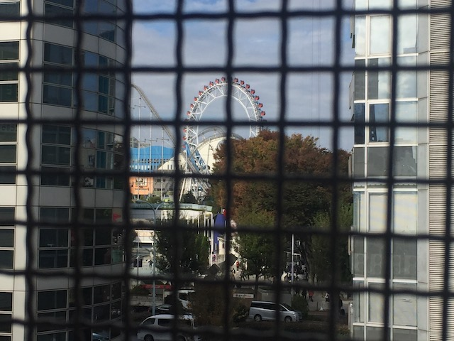
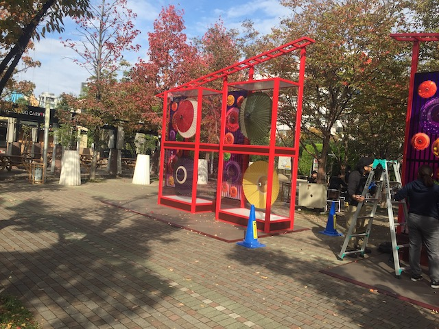
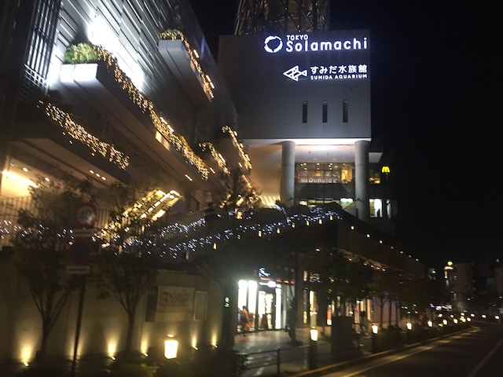

| |
JAPAN 2018!!! =)
Osaka Universal Studios Japan Parque Espana Nagashima Spaland
Hiroshima & Kyoto Tobu Zoo Fuji-Q Highlands
Tokyo Joypolis Tokyo Dome City Yomiuriland Sea Paradise Hamanako Pal Pal Tokyo Disney Resort Yokohama Cosmoworld
Toshimaen
Good morning. Time for another adventure-packed day in Japan. This morning, we begin for some fun in the Shibuya district of Japan.
Yeah. It's a good thing you posted that sign. Otherwise, that humanoid bunny would attract all the furries. ;)
OK. So Logan's friend Brandon, who's living abroad in Tokyo right now, really wanted to take us to this resteraunt called Eggs & Things, raving about it. I was skeptical, because we have an Eggs & Things in Ventura, which is a meh breakfast place. But apparently, it's a totally different thing in Japan. However, I accidentally went to the wrong Eggs & Things. Took the metro to the correct one, and arrived just in time for them to walk out of the resteraunt. Ugh. Unhappy that I missed that. >=( But at least it's just breakfast.
Hello mall I should've gone to all along this morning.
"Pika Pika! I see you still have Yen! I can fix that! Pika!"
Pupper with a leaf on its nose. =)
Hmm. Something about this train station in Shibuya is giving me some European vibes. Normally, I'd love that. But for once, I'm actually somewhere even better.
You wanna go there? Oh wait! We were just there yesterday!
If any of you are looking for friends, well...Line Friends is right here.
We are now in Harajuku. Something tells me that Alisa is going to love this place.
F*ck you too little panda.
Totoro sighting for Logan.

Hmm. I wonder if there's anything in this photo that we're gonna try and hit up today?
This is not the Parque Espana escelator. Therefor, it sucks.

I'm not sure what these umbrellas are for. I know in Asian cultures, they don't just use them to protect from the rain, but the sun as well. But....I don't get this. =/
Hey look! A dying breed of ride!
Yep. We're back at Tokyo Dome City. And look what I see running! Yep. We're here to ride Thunder Dolphin, which is open today. YAY!!! =)
Well, we did Japanese McDonalds and Japanese Wendys. And I did hear that Japanese Taco Bell is supposed to be really good. So....here we are.
Eh...it's not that much different from American Taco Bell. By far the biggest difference is that you can actually get a beer here unlike in the U.S (excluding that fancy Taco Bell in Las Vegas). But aside from that, the one here seems to really be hyping Jalapenos. It was good, but nothing too crazy. I do see them adding the jalepano stuff to American Taco Bell. It'd fit right in, but it's not something I'm desperate to cross the ocean, like I am with the Gran Garlic Pepper Burger at McDonalds.
I know these Japan updates are coming up slowly (Damn you adult responsibilities!), but I'm amazed that in between me visiting Tokyo Dome City and posting this update, they announced, constructed, and freaking opened a new coaster within that time span. Looks like I'm gonna come back here when I come back to Japan.
 OK. Time to go over the coaster that actually existed when I went. Thunder Dolphin.
OK. Time to go over the coaster that actually existed when I went. Thunder Dolphin.
OK. I love Japan. I love this country. I love this trip. Everything here is damn near perfect. However, nothing is completely perfect, and....yeah. It's time for an Incrediblecoasters Rant. This is the only one while in Japan (though there will be another one when I'm briefly back in China for my layover back home). But god damn! Remember when I talked about Zipper-Intolerance in the Universal Studios Japan update? Yeah. I explained that not only do I hate zipper-intolerance, but that almost all parks in Japan are like that (Seriously, the only Japanese parks not zipper-intolerant are Parque Espana, Youmiriland, Tokyo Disney Resort, and Toshimaen). But at least most parks in Japan are respectful about it and not security theater bullsh*t insane like they are in Orlando. Well, the one exception to that is Tokyo Dome City. HOLY SH*T!!! THEY ARE SO STRICT HERE!!! It's not just the standard Zipper-Intolerance bullsh*t like at most Japanese parks. No, it goes beyond empty your pockets. First off, they include my watch as a loose article and demand it come off. OH FOR F*CKS SAKE!!! It's bad enough when a couple water slides do it (Aqua Dunk and Dark Shot @ SunSplash). But at least they can argue that it'd scratch the water slide. I still disagree with that and am annoyed by that giant pain in the ass of taking off my watch. But fine. At least I understand your logic. Here, it's literally them treating it like a dangerous loose article. I know I complained about this before, but seriously. That watch ain't coming off! With that one time exception, this thing stays on when jumping off a 70 ft cliff! That watch NEVER comes off. Not for sleeping, not for showering, not at the water park, not even for f*cking cliff jumping (Just ask anyone who's been unfortunate enough to see my watch tan). On top of that, they just saw me empty out my pockets, and go through the pain in the ass of taking off my watch (GRRR). But that's not enough, and then you get patted down! WHAT!!? They feel around your legs, and on one ride, they were super concerned. You see, deep in my zippered pocket, apparently I missed the reciept from lunch at Taco Bell. And that's a loose article. ARE YOU F*CKING SERIOUS!!! NO!!! NO!!!! YOU DON'T EVEN HAVE TO TAKE SH*T LIKE THAT OUT WHEN GOING THROUGH THE METAL DETECTORS AT THE F*CKING AIRPORT!!!! NOT ONLY IS IT IN A ZIPPERED POCKET, BUT EVEN IF IT WASN'T IN A ZIPPERED POCKET, WORST CASE SCENARIO!!! IT FALLS OUT!!! It's not like a cell phone, a camera, or keys, where if that hits your after falling from 200 ft, yeah. It's gonna hurt you! It'd just flutter and float down to the ground and be litter. Yeah. Litter sucks. It's awful. I hate litter. But even me, Mr. F*ck Litter, do not think it is worth it to pat people down, and strip them down for that! Seriously! By this coasters own logic, you should have to ride this coaster naked because hey. Your clothes are a loose article (Hey. If a watch is considered a loose article, then by that same logic, so is your shirt, or your pants). I know that was a joke (much to the dissapointment of exhibitionists and voyeurs everywehere), but it still shows just how absurd the rules for riding Thunder Dolphin are. I mean.....IT'S LESS OF A PAIN IN THE ASS TO BOARD A PLANE TO F*CKING CHINA THAN TO RIDE AN INTAMIN HYPER COASTER!!!! I know I hate security theater and want airport security to be loosened, but it should NOT be the case that it's easier to board a plane to an unfriendly foreign country than it is to ride a f*cking roller coaster!
 And to make matters even worse, Thunder Dolphin isn't a very good hyper coaster. =(
And to make matters even worse, Thunder Dolphin isn't a very good hyper coaster. =(
 The first drop is really good. I will give it that.
The first drop is really good. I will give it that.
The best way to describe Thunder Dolphin is....constrained. It feels constrained by the fact that it's in a mall and such an urban setting. It can't really go very far and has to deal with being on all sorts of buildings and skyscrapers. And while I will admit that this does give the ride a FANTASTIC setting (One of the best), it feels very boxed in, and has to resort to awkward elements. Like this weird sort of trick track that feels like the pre-lift for Twisted Collosus on top of the roof because they to keep the ride up there. That, and I'm no fan of the big drop into the brake run. WEEE!!! =) WHOOSH!!! Aww. =( Oh well. Still better than many other coasters, and isn't the worst of the Hyper Coasters for sure.
 Ehh. There's a little bit of airtime on that little hill. But it's pretty mild.
Ehh. There's a little bit of airtime on that little hill. But it's pretty mild.
Hmm. Walking right under Thunder Dolphin is cool. Gotta admit that.
 Yeah. I'm sure this log flume is fun. But...not today.
Yeah. I'm sure this log flume is fun. But...not today.
Hey ladies! Head on out to Tokyo Dome City. They're having Ladies Night tonight. =)
Moomin!? What are you doing here?
Yep. They have a Moomin Cafe over here. I know he's popular in Sweden, but I didn't expect to see him here in Japan.
 I did decide to do this local dark ride they had here. It was bad. But...it was amusingly bad. Almost one of those "So bad it's good" rides.
I did decide to do this local dark ride they had here. It was bad. But...it was amusingly bad. Almost one of those "So bad it's good" rides.
 You want some authentic Japanese food!? Nah. I'll take a cheese dog instead. =P
You want some authentic Japanese food!? Nah. I'll take a cheese dog instead. =P
Thunder Dolphin threading the Big-O Wheel.
 Thunder Dolphin being puked out by one of the buildings at Tokyo Dome City.
Thunder Dolphin being puked out by one of the buildings at Tokyo Dome City.
 Thunder Dolphin may not be the best hyper coaster, but it's still a fun ride worth some rerides and defienetly worth stopping by and riding if in Tokyo.
Thunder Dolphin may not be the best hyper coaster, but it's still a fun ride worth some rerides and defienetly worth stopping by and riding if in Tokyo.
For those of you going to Japan, but are only planning on staying in Tokyo (Tokyo is amazing and all, but explore the rest of the country. That's great too), you can get a Tokunai Pass. It's like the Japan Rail Pass, but only for the local Tokyo Metro lines.
All right. So I have the night to myself. So I just spent the night exploring the stuff around Tokyo, wandering around, reflecting about how Japan is awesome, I'm so happy to be here, and thinking back at my home country (Apologies to my friends who live here, but F*ck Florida).
I've been in this country for 12 days now, and just walking down the street, being in Japan, it's still freaking awesome. I love this place.
Hmm. I wonder where we're heading tonight?
Nothing to see here. Just a local park.
Hmm. The Salt and Tobacco museum. I don't know why, but that suddenly seems intersting. Too bad it's already closed for the night.
Hey look! I found our final destination for the night!
Yep. Tonight, we're out to explore the Tokyo Skytree. Not only the biggest building in Japan, but also the tallest tower in the world.
Come one! Come all! Come get your tickets to the Tokyo Skytree!
I decided against going up to the top since I figured "I'm not really a skyscraper person. I can save some of my yen". But had I known it was the tallest tower in the world, I might've decided to go on up. Oh well. Just gonna have to come back to Japan. Oh no! What a shame! =P
I may not have seen the view from the top, but it was still really cool to see the Tokyo Skytree, especially now knowing it's the tallest tower in the world. Plus, there's all sorts of other cool stuff here.

Another big popular thing they have is the Sundai Aquarium. Not really in a fishy mood. But it's still cool to see that they have that here.
Please have Jammu open up his own jam shop. I don't want this boring Jam Cafe. I want more Jammu!
The NHK Character shop. Sounds worth checking out to me.
Not really my thing, but if you're an Anime fan, I have a feeling you'll like this.
Dinner is nothing special tonight. Just some local ramen. But hey. This is Japan. So of course, it's super good.
I'm not sure if these are a Japan only thing? If so, please bring these to the U.S!
Hmm. I wonder what tonights vending machine drink will be?
Mmm. Fanta Melon Ice Cream Soda. Really good, but I will admit. I do prefer just the regular Fanta Melon (I really should've retook this photo),
You wanna not fly home? No worries. Well, just have a sh*tload of yen, and you can just buy a car to drive across the Pacific Ocean. =P
 I know it takes longer to walk rather than take public transportation, but just walking around Japan is great.
I know it takes longer to walk rather than take public transportation, but just walking around Japan is great.
Yomiuriland
Home
|